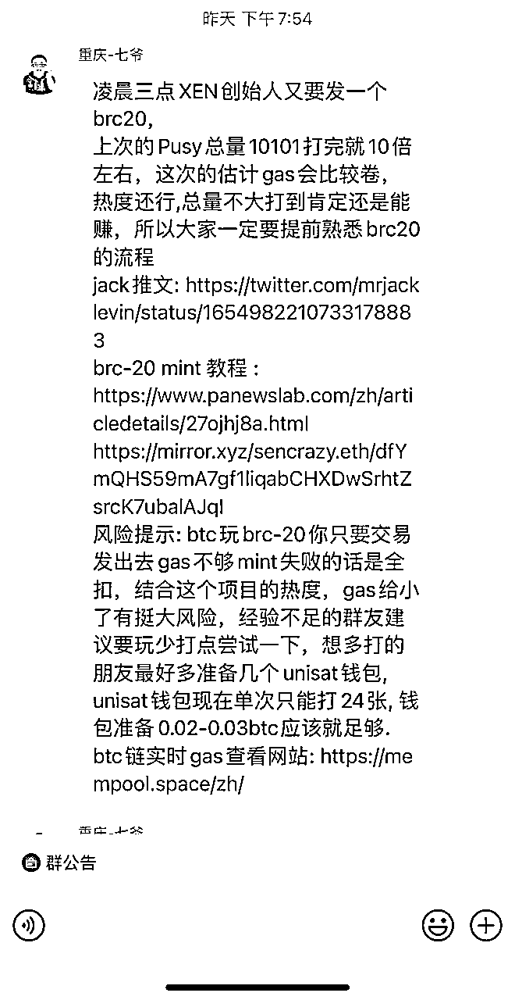
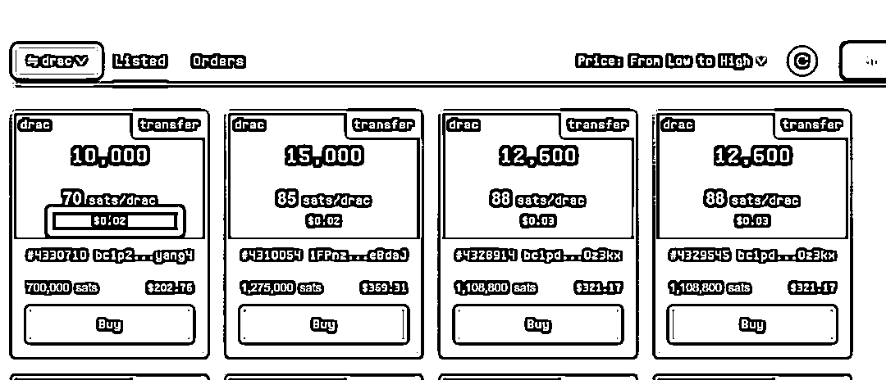
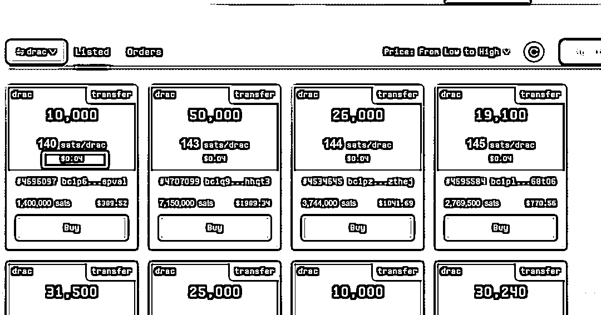
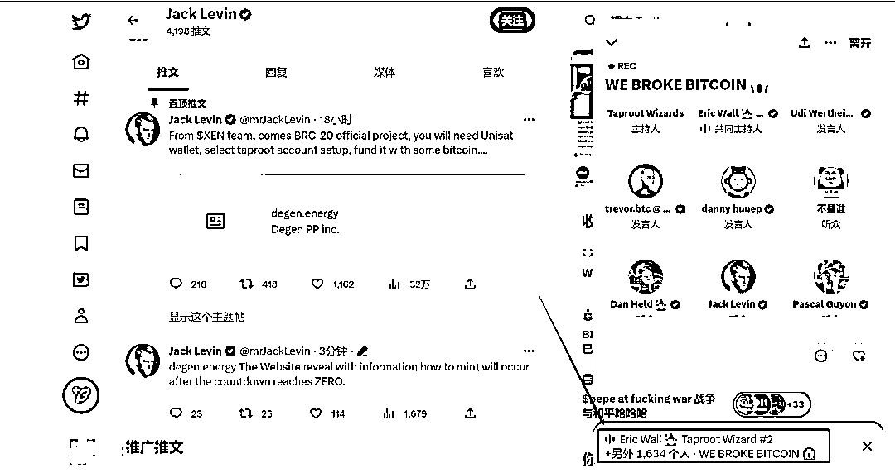
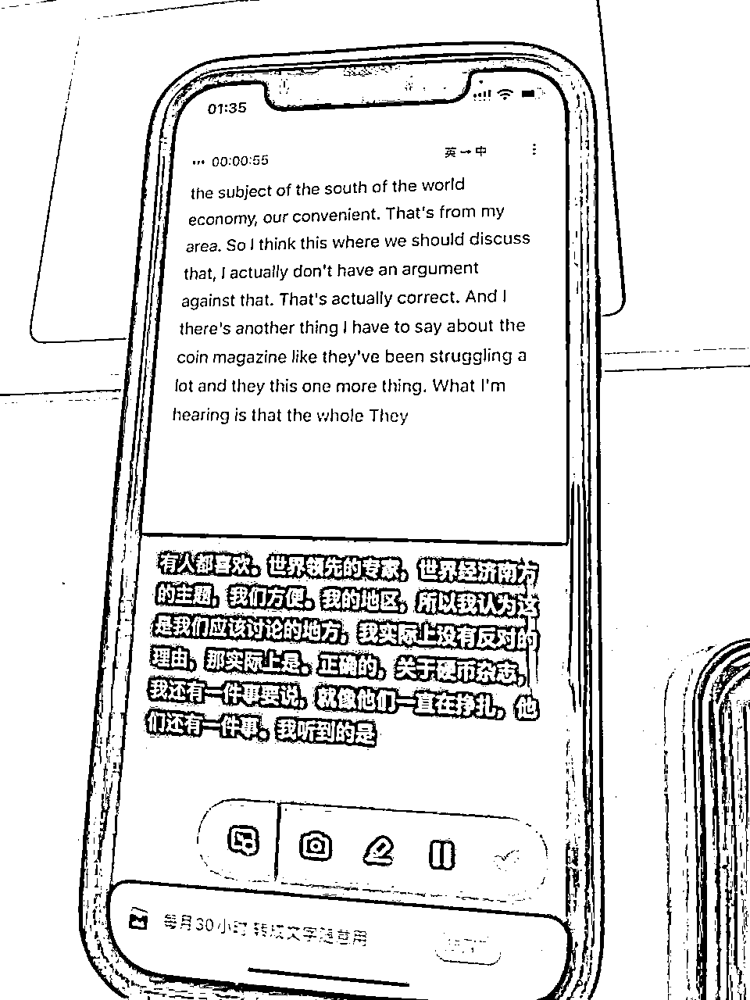
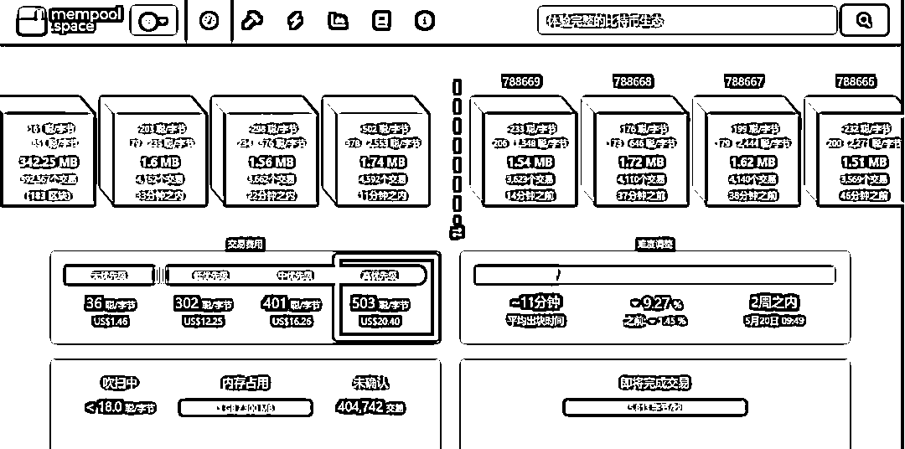
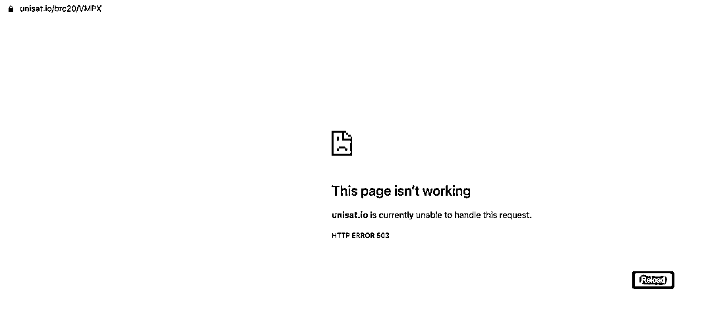
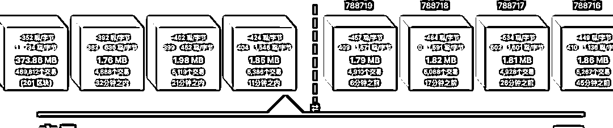
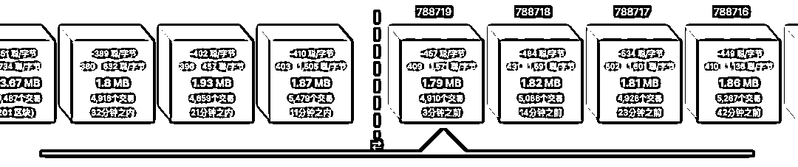
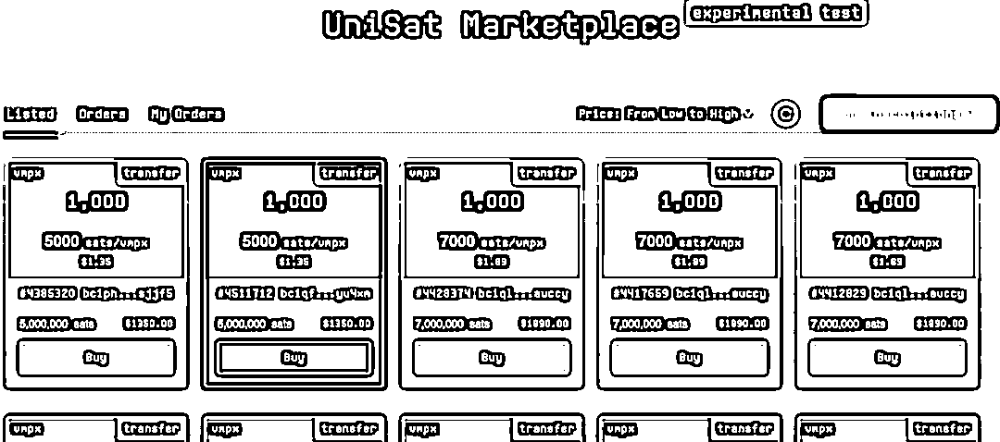

来源：https://ci3jlrgm02.feishu.cn/docx/Geucd6qWAoGztLx5EOkcKmjWnQg
你好哇，我是瓜藤，一个在 Web3 圈沉浮了两个周期的老韭菜，上一波让我这么亢奋还是2020年，踩中了一波大机会；
5月8号凌晨三点冲 #VMPX 也是因为最近摒弃了一些偏见后的第一次实战，自认为对自己有价值，希望对你也会有用，闲话不多说，进入正题
文章很长，送给那些有耐心改变人生的朋友
这是我最近几年一直在思考的问题，说实话，我想了好几年，一直没想透，总感觉能摸到点门路，但是没成体系，所以就一直在想一直在想，直到前几天看了老高小沫的视频讲只靠运气致富的视频，我才想明白（视频我放后面）。
虽然里面的理论不新鲜，相信大家在前些年就看到过，但是可能是我想上面的问题想到了一个量变到质变的灵界点，就差最后这临门一脚。
这个视频讲了什么呢？
有个意大利诺贝尔经济学家团队在搞笑诺贝尔奖上研究的课题《天赋与运气：随机性在成功与失败中的作用》，就是我们去掉所有环境、才华、能力等因素，单纯靠运气是否能够成功？结论是可以。
注意：这里面的成功不单指财富，名利、幸福生活、家庭富足都算。
当然了，这个是针对大多数普通人来说的，普通人的意思是智商正常人身自由的人。
那到底怎么做呢？
其实也很简单，保持积极好奇心、扩展视野、心态豁达，遇事多想好的一面，少想坏的一面，好运气就会多一点。
因为人生是有限游戏，短短几十年，所以只有提高单位时间内自己的运气值，你做事才能事半功倍，天道酬能思考方向对的勤。
你不能改变运气，但是可以改变运气的运气
不要嫌我啰嗦，我做事的习惯是必须要逻辑自洽才去做，哪怕这个逻辑是错的，那也一定要自洽；
第一部分是我整个人生抓住多次机会的关键点，很重要，所谓你相信什么才能做到什么，不管唯物还是唯心，希望你也能找到自己做事的逻辑。
所以，基于上面的思考，在我创业掉进大坑后才能在短时间爬出来。
那么怎么抓住机会？
答案是：抛掉偏见去机会多的地方
我当初进 Web3 就是想短期内赚钱翻身，目的很明确，行动很坚决，因为这一行的造富神话是其他行业无法比拟的，当然了，进场后坑也很多，至少有一线两线希望，在此不多赘述，后面有机会再聊。
有了理论指导，行动就有了支撑
寻找优质信息源，加入他们，用他们筛选出来的优质信息，小步试错，快速迭代，在 Web3 ，这种消息叫 Alpha ，机会总给那些愿意行动起来的人。
昨天看到七爷在群里转发 VMPX 的相关消息，我看到的时候已经晚上九点多了，介绍说是 XEN 的创始人发的新项目，因为我之前在 XEN 里面喝了点汤，所以就很重视。

七爷社群截图
最近参加七爷的线下见面会，顺便在外玩了半个月，刚回来，正好精力旺盛，再加上 #BRC20 热度空前，作为老韭菜，2021年看到 NFT ，因为偏见，所以完美错过大肉，这次看到 BRC20 我就强迫自己去了解。
话及此，做个重要提醒：Web3 圈有98% 的项目都是骗人的！！！所以考验的是出入场时机。
把鞋弄脏，遇到机会的时候，站在岸边指点评价总是容易的，真正投身其中才能感受风浪，风浪越大，鱼越贵。
昨晚是我第一次实操 BRC20 项目，从九点多知道这个消息后开始寻找各个社群整理出来的关于 BRC20 的各种资料，大概了解了它的原理和操作平台流程玩法，准备好钱包和 BTC 就开始模拟了；
这里面还出现了一个小插曲，因为 BRC20 太热了，比特币网络拥堵，安安还暂停了大约1个小时的提币，立马启动备用方案，用OK提（老韭菜别笑，这是说给小白听的，因为我们在做事的时候会因为遇到各种各样的困难而最终无法完成，我的行事风格就是：遇到问题，解决问题）；
因为是8号凌晨三点开始，提币到 mint 平台 unisat 已经快到一点了，为了在操作的时候不出现疏漏，在BTC到账后，对着教程开始反复模拟（很重要，要不断模拟测试问题）；
模拟了五六遍后觉得没大问题时，开始实操，找了几个mint 进度 80%——90%的项目 ，走了几遍流程，那阵的gas 费用220左右，有几个成功，有几个失败，才理解了教程里面说的 gas 给底的话，很可能鸡飞蛋打。
基于以上实操，给下一步抢 VMPX 定了个操作原则：gas 拉满抢！
等我把操作流程和操作原则制定下来后，有人开始转发一群技术人才破解了这个项目的代币名称，那些人已经抢跑mint 完了，坐等创始人公布代币名称，这样的话，如此热度的项目，那些抢跑的朋友就可以狠狠吃一波红利；
创始人后面又发文辟谣，以自己推发的倒计时链接为准；
我赶紧跑去看他们抢跑的那个币种，应声下跌到0.02，据说他们的mint价是0.1，此时我虽然看到了个套利机会，却因为之前没有准备，所以没办法抄底，因为 unisat 平台的交易市场是测试版本，所以目前只给有20积分或者有OG PASS 的人才能交易；
虽然我没法操作，但是我想验证我的猜想，果然，很多之前抢跑的那帮人跟 VMPX 的人撕逼，因为也有热度，所以一路起起伏伏，最高冲到0.08，截止发文，稳定在0.04


后来留在创始人推特space 听了听，因为不懂英文，所以用了讯飞的实时翻译，听个大概，贻笑大方，期待AI 实时翻译尽快到来，主要目的还是想看热度，当时在线1600左右，已经凌晨2点


凌晨三点，倒计时页面点击进去后直接跳到创始人推特，而推特里面有个创始人拍的TikTok 视频，是一个吸血鬼特效的短视频；
这个时候，社群炸锅了，大家都开骂了，中文英文韩文日文都有，我也以为是这家伙要搞行为艺术了；
就在各种社群里面看消息，也一直刷新创始人的推特，三点十分的时候，创始人发了推文；
这里有个反思的点：还是因为经验不足，完全没料到项目的热度，虽然在开始之前跟好友panda 兄简单聊了下，他觉得gas 得拉到1000去整才行；
在开始前我看到数据平台的gas 才250多，所以我第一批冲了10张，把gas 翻翻，调到了550，觉得说啥也问题不大，还是太年轻，等着平台确认我的订单一直在倒计时，就是不跳出下一步，然后我再去看gas 已经飙到了600多，心想不妙

后来就是到了漫长的等待网页刷新、进页面、卡出、页面503的恶性循环中
好不容易刷出来 mint 页面，钱包又卡到怀疑人生

总之，只能等着，看着完成度从20%缓慢又快速的增长，以及自己的屏幕从503和转圈圈中，gas 也一直居高不下
战役打到这个份上，好身体和好心态的重要性就体现出来了，我看到今天白天有些小伙伴在群里拍大腿，说后来一直进不去页面就睡了，没想到今天涨疯了。
此时，我打开了前段时间攒的剧《漫长的季节》，边看边刷新 mint 页面。
直到mint进度到了 99.6%，此时已经是早晨九点半左右了，网络没有那么拥堵了，我把gas 调到了800，终于，在3分钟后，我mint 的一些里面显示有一部分开始铭刻，边跟我女朋友视频边等待打包（此处郑重感谢我女朋友给我带来好运气），赶上了末班车；
功夫不负有心人，前后大约30分钟，两个包都打完了，顺利地看着有我的包的区块从待打包的红色状态跳到打包完成的蓝色状态，兴奋完也逐渐疲惫了，一看十点多了，就躺在公司的沙发上睡去了


下午两点醒来，看到价格涨到了0.8左右，后来逐渐涨到了1.3，约10倍涨幅，下午写文的时候，平台前端已崩溃，交易页面一直在维护，有个好消息是，明天，也就是9号11:00，芝麻开门会上 VMPX ，一般来说，这种 CEX 抢上，是因为热度，那么，怎么落袋为安就又是另一门学问了。

由于文章是新出炉的，写好准备发的时候发现平台交易页面已恢复，上午挂单的订单开始陆续显示出来，地板价格在0.39左右，也就是抢购成本的3倍左右，圈子里面这种虚空价格也很正常，坑也很多，所以，落袋为安很重要！别上头！
以金马兄在七爷老酒馆线下见面会的分享结尾：你不知道你运气有多好，能处在这个行业，你不知道你运气多好，折腾了这么久，你还在这个行业中。
全文完，希望对你有帮助！
最后，感谢那些在路上帮助我的人，给我带来好运的朋友们
五哥、小斌、魔音、知美、李自然、成甲老师、小袁、七爷、金马、亦仁、米索、溪言、含笑、大刀、流年、老图、飘哥、威哥、小朝、小昕、螳螂、Allen张、耳机兄、红旭、芦荟、神无、四点、小元，还有跟着我浴血奋战的团队的小伙伴们
还有我对我最重要的女朋友
是你们的一路帮助、信任和支持，才会有我现在的好运气
老高小沫视频：https://www.bilibili.com/video/BV1Dh4y1p7jw/?spm_id_from=333.880.my_history.page.click